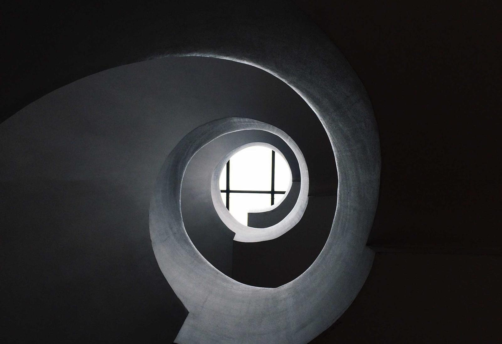

Fotografia z oddechem
Duże kadry otrzymują własne miejsce i pełnią rolę otwarcia historii, a nie wyłącznie ilustracji tekstu.
Koncepcja demonstracyjna · portfolio w przygotowaniu
Magazyn o architekturze, kulturze i przestrzeni

perspektywyArchitektura / Kultura / Ludzie
Autorska makieta demonstracyjna. Materiały poglądowe.
Przestrzeń, która prowadzi przez treść.
Demonstracyjny projekt magazynu, w którym fotografia i typografia budują rytm lektury. Architektura jest tematem i punktem odniesienia dla kompozycji: mocny kadr spotyka się z uporządkowaną siatką oraz miejscem na dłuższą opowieść.
Jak połączyć rozbudowaną treść z obrazem, który zasługuje na własną przestrzeń? Koncepcja zakłada zmienny rytm rozkładówek, wspólną hierarchię nagłówków i czytelny skład tekstu.
Architektura, kultura i ludzie w jednym języku wydawniczym.
Punktem wyjścia jest siatka, która porządkuje tekst, podpisy i fotografię. W obrębie tego systemu kolejne materiały mogą zmieniać tempo: pełny kadr, większy tytuł, dłuższa kolumna lub krótszy fragment wprowadzający do tematu.
Duże kadry otrzymują własne miejsce i pełnią rolę otwarcia historii, a nie wyłącznie ilustracji tekstu.
Tytuł, wprowadzenie, tekst główny i podpisy mają wyraźne role, które ułatwiają orientację w magazynie.
Zmiana skali i proporcji pozwala różnicować kompozycję przy zachowaniu jednej struktury wydawniczej.